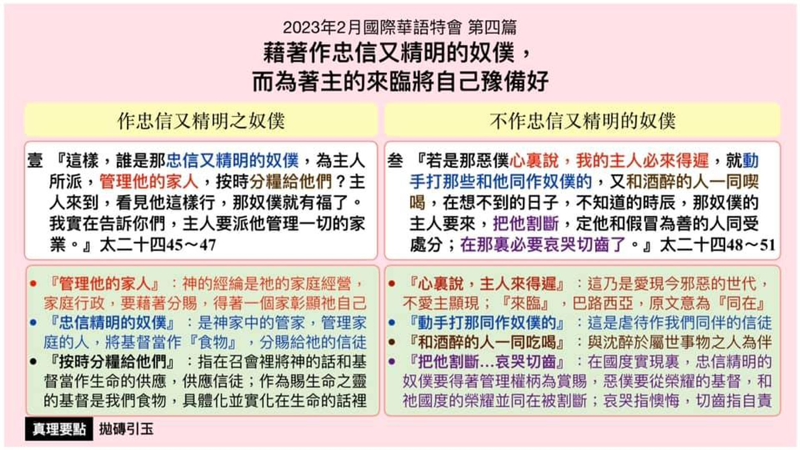

第四篇 借着作忠信又精明的奴仆，而为着主的来临将自己预备好
前言
信徒向着基督的身分有两面：在生命一面，他 们是童女，为祂而活；在服事、工作一面，他 们是祂所买、服事祂的奴仆。为着生命，我们 需要油，神的灵，甚至祂的充满，使我们能过 童女的生活，作主的见证；为着服事、工作， 我们需要银子，属灵的恩赐，使我们能装备为 良善的奴仆，完成主所要完成的。我们需要在 生命上儆醒豫备，在灵里被祂的灵充满，并在 魂里被变化以致成熟而被提。我们也需要在服 事上忠信又精明，执行主的托付，运用主所给 的恩赐，在主回来时能赢得赏赐。 本篇信息是 专特性的论到对主的服事乃是联于主的来临。
真理要点(鸟瞰)
壹 忠信精明的奴仆 ：①神有其家庭经营②是神家中的管家 ③供应神话和基督
贰 不忠愚拙的恶仆 ：①爱现今邪恶世代②虐待同作奴仆者 ③与酒醉者同喫喝④无分国度的实现
经历应用(操练)
我们等候主回来时，也需要忠信精明的事奉祂。 马太二十四章四十五节告诉我们事奉的路，乃是 『按时分粮给他们』。我们在聚会中说话，到人的 家中探访，将基督供应人，就是分粮给他们。对我 们自己，我们必须否认魂并在灵里跟从主；对别 人，我们必须学习一直将神的话和基督，当作生 命的供应来供应人。
负担
为着召会的前途，为着我们属灵的长进，以及我 们在主面前的功用，我们都要接受这个负担。主 回来时，我们都要向祂交账；然而我们如何交 账，不是一件小事。主在马太二十五章十九节 说，『过了许久，那些奴仆的主人竟然来和他们 算账。』主回来时，忠信又精明的奴仆要得称许， 又恶又懒的奴仆要受惩罚。即使主迟延，但谁敢 说今天或明天我们还在？我们应当趁未去见主 以先，好好的爱祂、事奉祂，讨主喜悦，准备将 来向祂交账。
